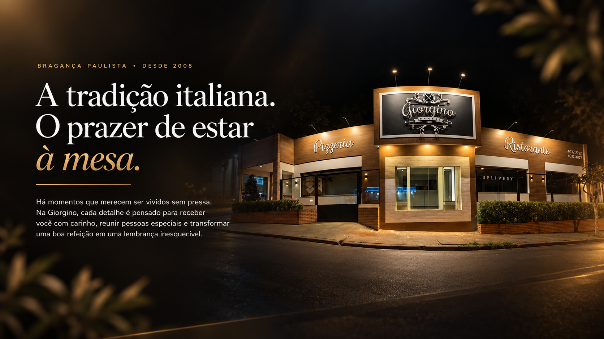
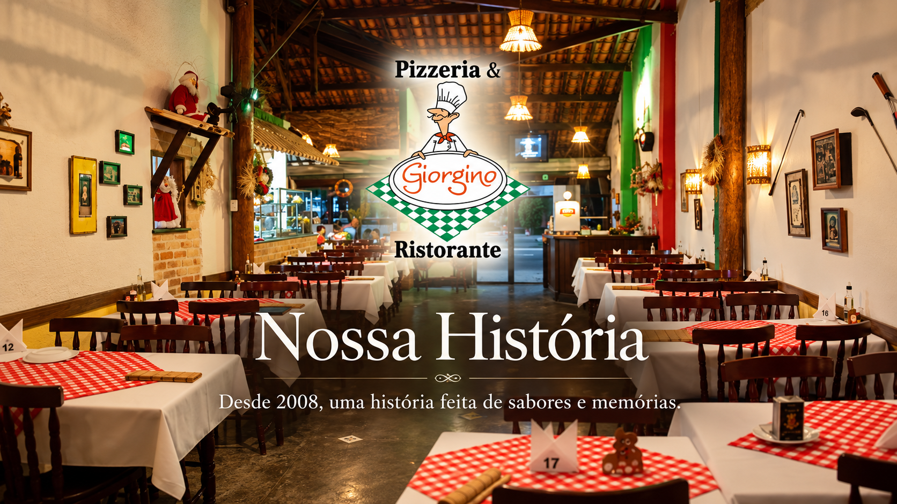
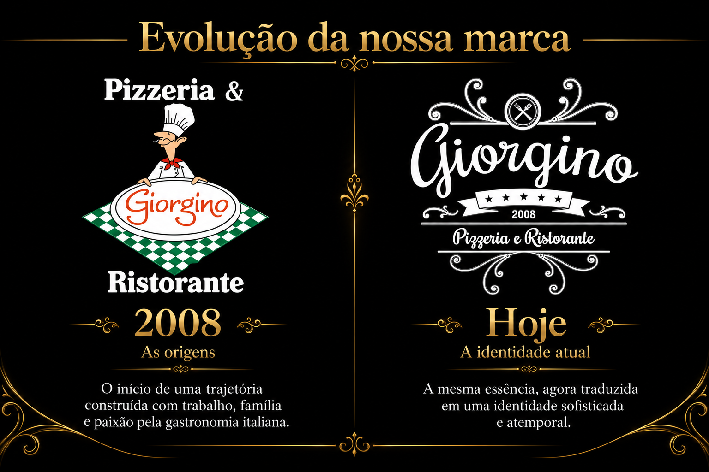
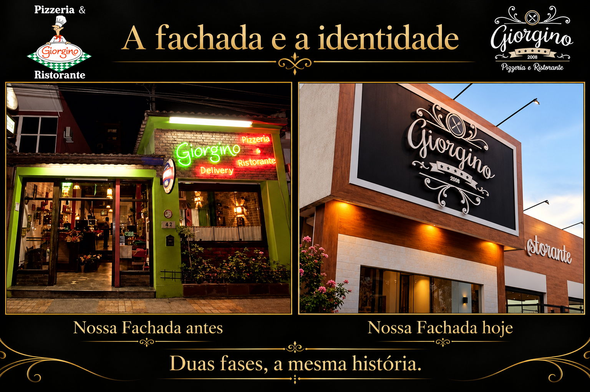
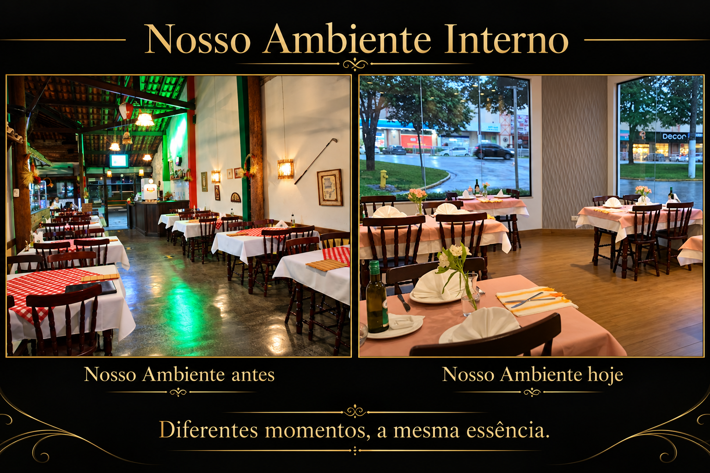
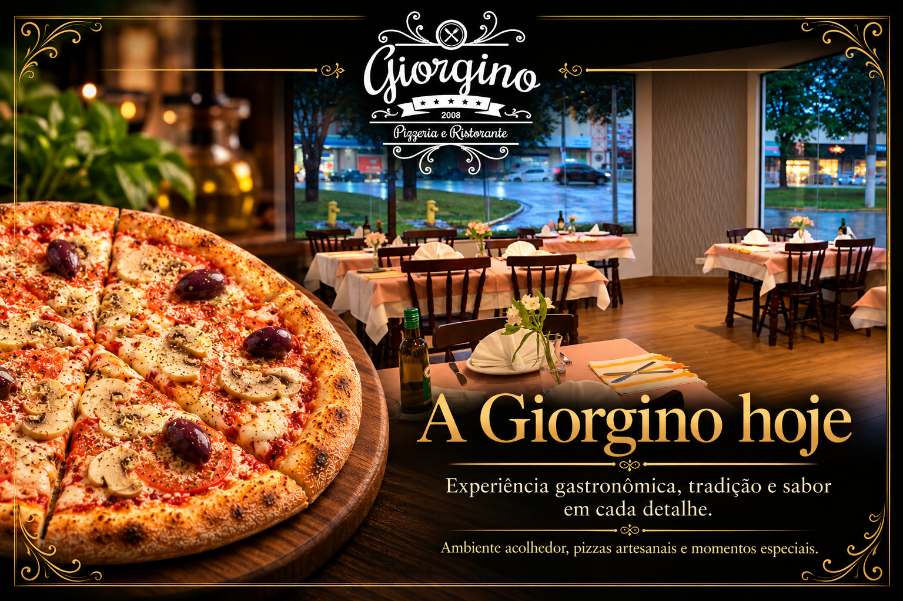
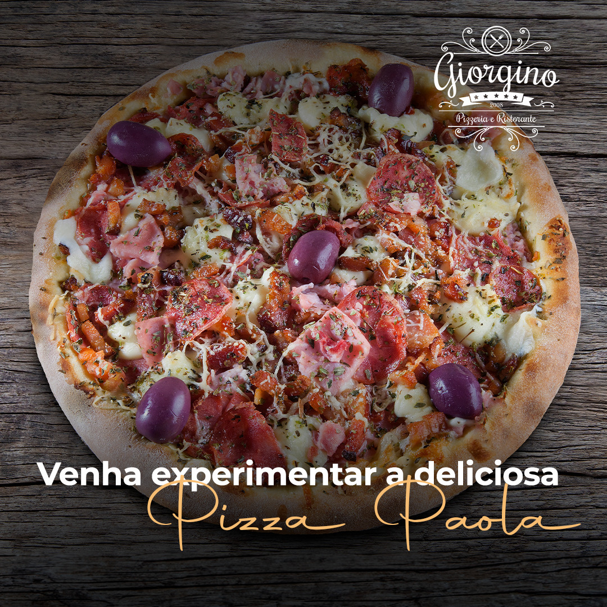
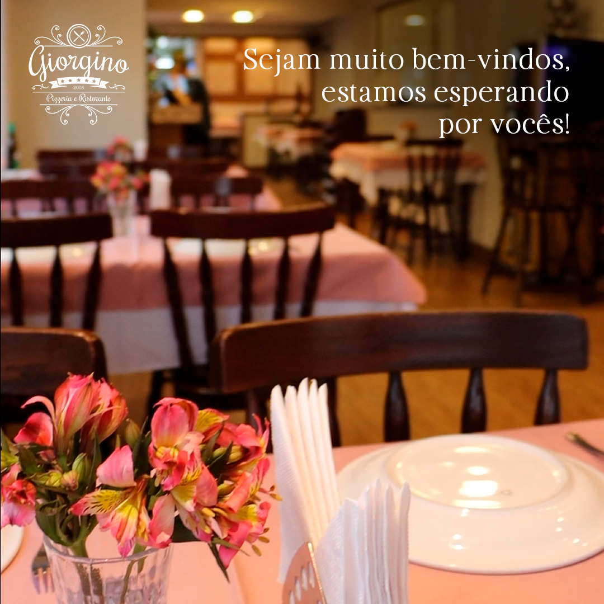

Bragança Paulista • SP
Rua Tiradentes, nº 10 — CEP 12919-020
Esquina com Rua Dante Grimello, nº 77 — CEP 12919-470
Jardim Califórnia — Bragança Paulista/SP.


NOSSA HISTÓRIA
Algumas histórias começam muito antes de ganharem um nome. A nossa nasceu do encontro de duas famílias, de uma união marcada por muito amor e da vontade de construir, juntos, um novo caminho. A experiência e a tradição de uma família que já vivia o prazer de receber encontraram novos sonhos. E, em 2008, essa união ganhou um lugar à mesa: nascia a história da Giorgino.
O primeiro nome imaginado foi Giardino — jardim, em italiano —, uma homenagem a essa origem. Mas o caminho pediu uma mudança. Naquele momento, encontramos em Giorgino o nome perfeito para a nova caminhada, mantendo inteiro o carinho pelo projeto que nos trouxe até ali.
O começo exigiu coragem. Assumimos uma pizzaria que já fazia parte da cidade e atravessava um ciclo difícil. Mais do que transformar um espaço, era preciso conquistar, pouco a pouco, a confiança de quem passava pela porta. Cada cliente que voltava, cada mesa que se enchia e cada novo encontro nos davam forças para continuar. Assim, entre trabalho, cuidado e afeto, fomos escrevendo a nossa própria história.
Em 2020, essa história ganhou um novo endereço. O ambiente rústico deu lugar a uma casa mais elegante, pensada para acolher novos momentos. Mudou o cenário; continuou o desejo que nos trouxe até aqui: receber bem e cuidar de cada encontro.
Hoje, queremos que você encontre na Giorgino mais do que uma boa refeição. Queremos que se sinta acolhido desde a chegada, que perceba a atenção em cada detalhe e que leve consigo uma lembrança feliz e inesquecível.
Uma mesa pode reunir um aniversário, um reencontro, uma celebração ou simplesmente transformar uma noite comum em um momento especial. Esse é o nosso maior desejo: que cada jantar tenha esse significado, porque cada cliente é especial para nós. E que, ao voltar, você sinta a alegria de chegar a uma casa onde é sempre bem-vindo.





A nossa história continua em cada mesa.
E será um prazer ter você na próxima página.
NOSSA GASTRONOMIA
Receitas que celebram a tradição, ingredientes especiais e o prazer de compartilhar bons momentos.

Fotografia original em seleçãoPIZZAS
GALERIA DE FOTOS E MEMÓRIAS
Nosso ambiente, nossa cozinha e os momentos da casa.
Imagens do acervo publicado em @giorginorestaurante ↗
CONHEÇA UM POUCO MAIS
Sabores, encontros e o cuidado de receber: assista ao vídeo institucional publicado no nosso Instagram.
O vídeo será carregado do Instagram ao clicar. Se o player não estiver disponível, assista no perfil oficial ↗.

Espaço reservado para um novo vídeo institucional, a ser ativado após aprovação.
04 / O RESTAURANTE
Mais do que um restaurante, um lugar para reunir pessoas, celebrar momentos e criar boas lembranças. Na Giorgino, cada detalhe é pensado para que você se sinta sempre bem-vindo.
Rua Tiradentes, nº 10 — CEP 12919-020
Esquina com Rua Dante Grimello, nº 77 — CEP 12919-470
Jardim Califórnia — Bragança Paulista/SP.
Todos os dias, das 18h à meia-noite.
UM MOMENTO PARA GUARDAR
Há momentos que merecem uma mesa escolhida com carinho. Na Giorgino, já tivemos a alegria de fazer parte de casamentos, noivados, pedidos de namoro cheios de emoção, formaturas, confraternizações de empresas e aniversários criativos. Cada celebração trouxe sua própria história — e nos deu o privilégio de guardar um pedacinho dela junto à nossa.
Este espaço foi pensado para acolher também o seu momento. Seja a dois, entre amigos, em família ou com toda a equipe, queremos ajudar você a imaginar uma celebração com a sua cara, em uma mesa onde cada pessoa se sinta esperada e especial.
Conte o que você sonha celebrar. Vamos receber sua solicitação pelo WhatsApp, conhecer os detalhes e conversar com cuidado sobre as possibilidades para tornar esse encontro ainda mais especial.
Uma mesa reservada merece cuidado.
A tolerância de atraso é de 15 minutos após o horário confirmado. Passado esse período, a reserva poderá ser cancelada pela equipe e a mesa poderá ser liberada, inclusive aos finais de semana e feriados.
Decoração de mesa ou salão e outros pedidos especiais estão sujeitos à disponibilidade. Serviços adicionais poderão ter cobrança à parte, com valores informados e aprovados por você antes da confirmação.
Para grandes grupos, após conhecermos pelo WhatsApp a ocasião, a data e o número de convidados, poderemos avaliar condições especiais, inclusive a possibilidade de descontos. A análise é individual, conforme a disponibilidade e as características da reserva, sem concessão automática.
05 / CONTATO
Uma boa experiência começa com um convite. Estamos à disposição para receber suas dúvidas, pedidos e reservas. Será um prazer falar com você!